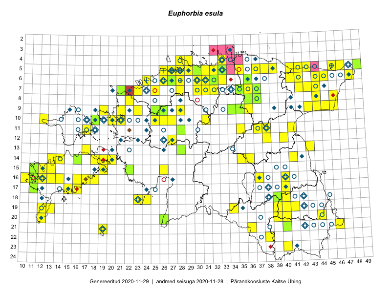

Euphorbia esula
Uuendatud: 2016-12-08
Kaardile koondatud taksonid: Euphorbia esula L.; Euphorbia esula subsp. esula L.

Kaart põhineb 126 kirjel, neist vaatlusi 125 ja eksemplare 1. Taksonit on leitud 97 ruudust.
| Ruut | Vaatleja(d) | Vaatlusaeg | Kirje tüüp | Viide andmebaasikirjele |
|---|---|---|---|---|
| ? | Malle Leht | 2015-05-16 | ruut/ala | vaata PlutoFis |
| ? | Malle Leht | 2015-08-02 | ruut/ala | vaata PlutoFis |
| 07-42 | Toomas Kukk, Peedu Saar | 2014-09-25 | ruut/ala | vaata PlutoFis |
| 05-32 | Rein Kalamees | 2015-09-03 | ruut/ala | vaata PlutoFis |
| 14-41 | Peedu Saar, Ott Luuk | 2015-06-21 | ruut/ala | vaata PlutoFis |
| 05-49 | Tiit Hallikma, Toomas Kukk | 2015-07-22 | ruut/ala | vaata PlutoFis |
| 06-41 | Peedu Saar, Sander Laherand | 2015-06-01 | ruut/ala | vaata PlutoFis |
| 08-44 | Peedu Saar, Liina Oja | 2015-07-20 | ruut/ala | vaata PlutoFis |
| 06-44 | Peedu Saar, Liina Oja | 2015-07-21 | ruut/ala | vaata PlutoFis |
| 18-40 | Malle Leht | 2015-07-25 | ruut/ala | vaata PlutoFis |
| ? | Malle Leht | 2015-07-28 | ruut/ala | vaata PlutoFis |
| 18-40 | Malle Leht | 2015-07-27 | ruut/ala | vaata PlutoFis |
| ? | Malle Leht | 2015-07-08 | ruut/ala | vaata PlutoFis |
| 09-45 | Peedu Saar, Liina Oja | 2015-07-24 | ruut/ala | vaata PlutoFis |
| 12-40 | Peedu Saar, Eerik Leibak | 2015-08-16 | ruut/ala | vaata PlutoFis |
| 04-33 | Rein Kalamees, Kersti Püssa | 2015-09-12 | ruut/ala | vaata PlutoFis |
| 06-31 | Rein Kalamees, Kersti Püssa | 2015-09-13 | ruut/ala | vaata PlutoFis |
| 06-32 | Rein Kalamees, Kersti Püssa | 2015-09-13 | ruut/ala | vaata PlutoFis |
| 11-41 | Peedu Saar | 2015-08-22 | ruut/ala | vaata PlutoFis |
| 06-48 | Ott Luuk, Hannes Pehlak | 2015-07-21 | ruut/ala | vaata PlutoFis |
| 16-17 | Meeli Mesipuu, Kadri Tali | 2015-07-06 | ruut/ala | vaata PlutoFis |
| 16-18 | Meeli Mesipuu, Kadri Tali | 2015-07-06 | ruut/ala | vaata PlutoFis |
| 17-40 | Thea Kull, Peedu Saar | 2015-06-19 | ruut/ala | vaata PlutoFis |
| 13-17 | Meeli Mesipuu, Kadri Tali | 2015-07-08 | ruut/ala | vaata PlutoFis |
| 14-16 | Toomas Kukk, Thea Kull, Ott Luuk, Peedu Saar | 2014-06-27 | ruut/ala | vaata PlutoFis |
| 06-45 | Thea Kull, Eerik Leibak | 2015-07-20 | ruut/ala | vaata PlutoFis |
| 08-46 | Thea Kull, Eerik Leibak | 2015-07-23 | ruut/ala | vaata PlutoFis |
| 09-35 | Jana-Maria Habicht, Ester Valdvee, Kirke Pilvik, Anu Nurk | 2015-07-30 | ruut/ala | vaata PlutoFis |
| 09-36 | Jana-Maria Habicht, Ester Valdvee | 2015-08-15 | ruut/ala | vaata PlutoFis |
| 07-43 | Meeli Mesipuu, Timo Luhamäe | 2015-07-22 | ruut/ala | vaata PlutoFis |
| 22-38 | Eeva-Maria Jeletsky, Tarmo Niitla | 2015-07-15 | ruut/ala | vaata PlutoFis |
| 19-13 | Oliver Parrest | 2015-07-01 | ruut/ala | vaata PlutoFis |
| 11-37 | Ülle Jõgar, Illi Tarmu, K. Rünk | 2015-07-24 | ruut/ala | vaata PlutoFis |
| 05-28 | Erkki Otsman, Sergei Smirnov | 2015-06-26 | ruut/ala | vaata PlutoFis |
| 15-19 | Meeli Mesipuu | 2015-06-21 | ruut/ala | vaata PlutoFis |
| 14-20 | Meeli Mesipuu, Kadri Tali | 2015-06-26 | ruut/ala | vaata PlutoFis |
| 14-20 | Meeli Mesipuu, Kadri Tali | 2015-06-26 | ruut/ala | vaata PlutoFis |
| 16-12 | Mari Reitalu | 2015-06-16 | ruut/ala | vaata PlutoFis |
| 15-13 | Mari Reitalu, Oliver Parrest | 2015-07-24 | ruut/ala | vaata PlutoFis |
| 15-11 | Mari Reitalu, Oliver Parrest | 2015-07-16 | ruut/ala | vaata PlutoFis |
| 12-38 | Ulvi Selgis | 2015-08-09 | ruut/ala | vaata PlutoFis |
| 16-11 | Mari Reitalu, Triin Reitalu | 2015-05-28 | ruut/ala | vaata PlutoFis |
| 17-11 | Mari Reitalu, Triin Reitalu | 2015-08-05 | ruut/ala | vaata PlutoFis |
| 16-12 | Mari Reitalu | 2015-07-08 | ruut/ala | vaata PlutoFis |
| 10-25 | Aat Sarv | 2015-05-31 | ruut/ala | vaata PlutoFis |
| 07-44 | Timo Luhamäe, Eerik Leibak | 2015-05-30 | ruut/ala | vaata PlutoFis |
| 07-42 | Mari Metsoja, Jaak-Albert Metsoja | 2015-07-23 | ruut/ala | vaata PlutoFis |
| 06-42 | Mari Metsoja, Jaak-Albert Metsoja | 2015-07-21 | ruut/ala | vaata PlutoFis |
| 06-24 | Mari Metsoja, Jaak-Albert Metsoja | 2015-07-31 | ruut/ala | vaata PlutoFis |
| 06-26 | Mari Metsoja, Jaak-Albert Metsoja | 2015-07-29 | ruut/ala | vaata PlutoFis |
| 05-42 | Kaili Orav, Silvia Pihu | 2015-06-18 | ruut/ala | vaata PlutoFis |
| 05-41 | Kaili Orav, Silvia Pihu | 2015-06-18 | ruut/ala | vaata PlutoFis |
| 05-39 | Kaili Orav, Silvia Pihu | 2015-06-19 | ruut/ala | vaata PlutoFis |
| 09-26 | Peedu Saar, Kersti Püssa, Rein Kalamees, Toomas Kukk | 2014-06-11 | ruut/ala | vaata PlutoFis |
| 09-26 | Peedu Saar, Kersti Püssa, Rein Kalamees, Toomas Kukk | 2014-06-11 | punkt | vaata PlutoFis |
| 09-26 | Peedu Saar, Kersti Püssa, Rein Kalamees, Toomas Kukk | 2014-06-11 | punkt | vaata PlutoFis |
| 14-35 | Aat Sarv | 2015-05-22 | ruut/ala | vaata PlutoFis |
| 09-26 | Thea Kull, Meeli Mesipuu, Eerik Leibak | 2014-06-11 | ruut/ala | vaata PlutoFis |
| 09-25 | Thea Kull, Meeli Mesipuu, Eerik Leibak | 2014-06-11 | ruut/ala | vaata PlutoFis |
| 10-26 | Jaak-Albert Metsoja, Ott Luuk, Maret Gerz | 2014-06-11 | ruut/ala | vaata PlutoFis |
| 06-26 | Peedu Saar, Ott Luuk | 2014-09-03 | ruut/ala | vaata PlutoFis |
| 10-27 | Aat Sarv | 2015-07-02 | ruut/ala | vaata PlutoFis |
| 06-27 | Tõnu Ploompuu | 2015-08-11 | ruut/ala | vaata PlutoFis |
| 10-20 | Toomas Kukk, Peedu Saar | 2016-05-12 | ruut/ala | vaata PlutoFis |
| 09-25 | Meelis Muuga, Tõnu Ploompuu | 2015-08-17 | ruut/ala | vaata PlutoFis |
| 09-21 | Kadi-Liis Kesler, Tõnu Ploompuu | 2015-07-14 | ruut/ala | vaata PlutoFis |
| 06-28 | Tõnu Ploompuu | 2015-06-06 | ruut/ala | vaata PlutoFis |
| 06-28 | Toomas Kukk | 2016-06-02 | ruut/ala | vaata PlutoFis |
| 10-21 | Tõnu Ploompuu | 2015-08-21 | ruut/ala | vaata PlutoFis |
| 13-43 | Kai Rünk, Ülle Jõgar, Illi Tarmu | 2016-06-10T06:30Z | ruut/ala | vaata PlutoFis |
| 08-46 | Indrek Tammekänd | 2016-05-29 | punkt | vaata PlutoFis |
| 11-38 | Eeva-Maria Jeletsky, Tarmo Niitla | 2016-06-09 | ruut/ala | vaata PlutoFis |
| 20-44 | Peedu Saar, Tarmo Niitla | 2016-06-15 | ruut/ala | vaata PlutoFis |
| 19-41 | Vivika Väli, Ülo Väli | 2015-06-20 | ruut/ala | vaata PlutoFis |
| 06-24 | Thea Kull, Helle Mäemets | 2016-07-07 | ruut/ala | vaata PlutoFis |
| 09-25 | Thea Kull, Oliver Parrest | 2016-07-06 | ruut/ala | vaata PlutoFis |
| 06-26 | Tiina Elvisto, Eerik Leibak | 2016-07-04 | ruut/ala | vaata PlutoFis |
| 10-18 | Sander Laherand, Toomas Kukk | 2016-07-07 | ruut/ala | vaata PlutoFis |
| 05-37 | Tõnu Ploompuu, Eerik Leibak | 2016-07-27 | ruut/ala | vaata PlutoFis |
| 05-38 | Tõnu Ploompuu, Eerik Leibak | 2016-07-27 | ruut/ala | vaata PlutoFis |
| 05-47 | Erkki Otsman, Sergei Smirnov | 2016-06-16 | ruut/ala | vaata PlutoFis |
| 05-46 | Erkki Otsman, Sergei Smirnov | 2016-06-17 | ruut/ala | vaata PlutoFis |
| 14-14 | Peedu Saar, Maret Gerz | 2016-08-12 | ruut/ala | vaata PlutoFis |
| 11-17 | Maret Gerz, Meeli Mesipuu | 2016-08-08 | ruut/ala | vaata PlutoFis |
| 06-28 | Erkki Otsman, Sergei Smirnov | 2016-07-14 | ruut/ala | vaata PlutoFis |
| 06-30 | Toomas Kukk, Sander Laherand | 2016-08-30 | ruut/ala | vaata PlutoFis |
| 05-32 | Toomas Kukk, Sander Laherand | 2016-08-31 | ruut/ala | vaata PlutoFis |
| 17-16 | Toomas Kukk, Meeli Mesipuu | 2016-08-12 | ruut/ala | vaata PlutoFis |
| 04-29 | Sander Laherand, Tõnu Ploompuu, Nele Jõessar | 2016-07-25 | ruut/ala | vaata PlutoFis |
| 13-28 | Indrek Tammekänd | 2016-08-31 | punkt | vaata PlutoFis |
| 07-30 | Toomas Kukk, Peedu Saar | 2016-09-09 | ruut/ala | vaata PlutoFis |
| 06-32 | Toomas Kukk, Peedu Saar | 2016-09-08 | ruut/ala | vaata PlutoFis |
| 07-35 | Toomas Kukk, Sander Laherand, Nele Jõessar | 2016-07-27 | ruut/ala | vaata PlutoFis |
| 05-28 | Toomas Kukk, Peedu Saar | 2016-08-03 | ruut/ala | vaata PlutoFis |
| 09-19 | Rein Kalamees, Liina Oja | 2016-07-07 | ruut/ala | vaata PlutoFis |
| 21-19 | Meeli Mesipuu, Ott Luuk | 2016-09-10 | ruut/ala | vaata PlutoFis |
| 05-31 | Sander Laherand, Toomas Kukk | 2016-08-30 | ruut/ala | vaata PlutoFis |
| 06-33 | Peedu Saar, Toomas Kukk | 2016-09-14 | ruut/ala | vaata PlutoFis |
| 05-43 | Peedu Saar, Toomas Kukk | 2016-09-13 | ruut/ala | vaata PlutoFis |
| 14-18 | Mari Reitalu, Sirje Azarov | 2016-08-09 | ruut/ala | vaata PlutoFis |
| 14-20 | Mari Reitalu, Sirje Azarov | 2016-08-17 | ruut/ala | vaata PlutoFis |
| 19-13 | Mari Reitalu, Sirje Azarov | 2016-07-31 | ruut/ala | vaata PlutoFis |
| 20-12 | Mari Reitalu, Sirje Azarov | 2016-08-08 | ruut/ala | vaata PlutoFis |
| 09-28 | Rein Kalamees, Liina Oja | 2016-07-06 | ruut/ala | vaata PlutoFis |
| 07-32 | Rein Kalamees, Kersti Püssa | 2016-06-23 | ruut/ala | vaata PlutoFis |
| 09-46 | Rein Kalamees, Kersti Püssa | 2016-06-28 | ruut/ala | vaata PlutoFis |
| 18-24 | Peedu Saar, Ott Luuk | 2016-09-21 | ruut/ala | vaata PlutoFis |
| 16-16 | Meeli Mesipuu | 2016-09-25 | ruut/ala | vaata PlutoFis |
| 07-25 | Helle Mäemets, Tiina Elvisto | 2016-07-05 | ruut/ala | vaata PlutoFis |
| 16-14 | Meeli Mesipuu | 2016-09-26 | ruut/ala | vaata PlutoFis |
| 21-19 | Ott Luuk, Meeli Mesipuu | 2016-09-10 | punkt | vaata PlutoFis |
| 05-35 | Peedu Saar, Liina Oja, Susanna Vain | 2016-07-27 | ruut/ala | vaata PlutoFis |
| 11-35 | Peedu Saar, Timo Luhamäe | 2016-07-21 | ruut/ala | vaata PlutoFis |
| 15-11 | Meeli Mesipuu, Toomas Kukk, Mari Reitalu | 2016-10-07 | ruut/ala | vaata PlutoFis |
| 14-13 | Toomas Kukk, Meeli Mesipuu, Mari Reitalu | 2016-10-06 | ruut/ala | vaata PlutoFis |
| 14-19 | Meeli Mesipuu | 2016-06-29 | ruut/ala | vaata PlutoFis |
| 07-31 | Peedu Saar, Toivo Sepp | 2016-07-18 | ruut/ala | vaata PlutoFis |
| 10-27 | Peedu Saar, Timo Luhamäe, Johannes Kõdar | 2016-07-06 | ruut/ala | vaata PlutoFis |
| 05-39 | Ott Luuk, Tiit Hallikma | 2016-07-28 | ruut/ala | vaata PlutoFis |
| 12-27 | Ranno Puumets | 2015-06-01 | ruut/ala | vaata PlutoFis |
| 17-15 | Meeli Mesipuu, Toomas Kukk, Johannes Kõdar | 2016-08-11 | ruut/ala | vaata PlutoFis |
| 04-28 | Kadi-Liis Kesler, Tiina Elvisto | 2015-08-12 | ruut/ala | vaata PlutoFis |
| 09-23 | Jaak-Albert Metsoja, Mari Metsoja | 2016-07-06 | ruut/ala | vaata PlutoFis |
| 09-43 | Hannes Pehlak, Ott Luuk | 2016-07-29 | ruut/ala | vaata PlutoFis |
| 16-10 | Sirje Azarov | 2016-10-05 | ruut/ala | vaata PlutoFis |
| 09-35 | Jana-Maria Habicht | 2015-07-30 | eksemplar | vaata PlutoFis |